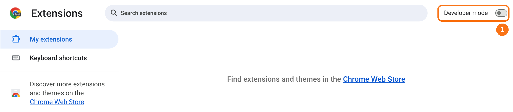
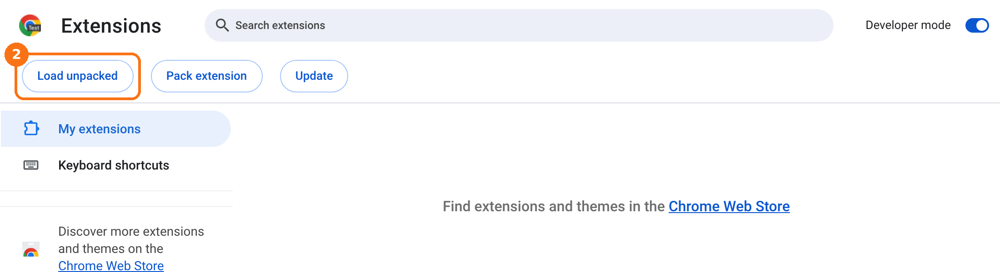
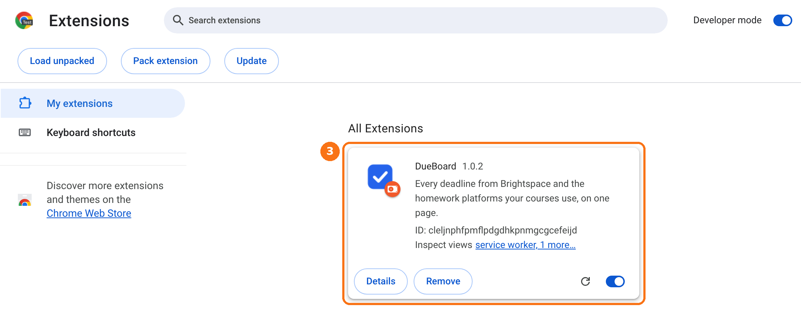
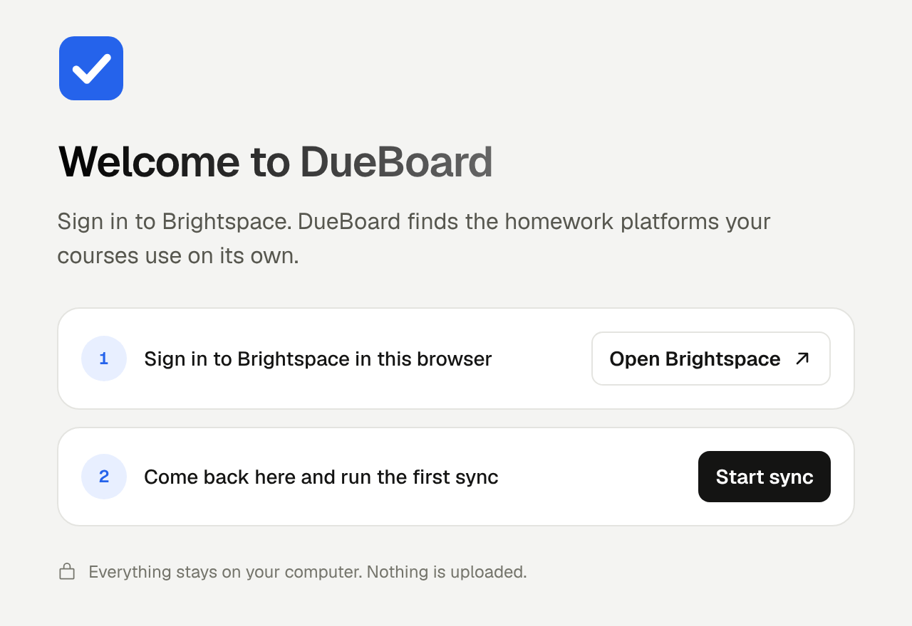

Install DueBoard
DueBoard is on the Chrome Web Store. Click the button, then Add to Chrome. It works in Chrome, Microsoft Edge and other Chromium browsers (Brave, Arc, Opera).
Add to ChromeInstall by hand (testers)
Testers who try a version before it reaches the store add it by hand. It takes about two minutes, and you don't need to know anything about code.
Using Firefox? DueBoard for Firefox is coming to Firefox Add-ons, where it installs with one click. Until then, testers can follow the Firefox guide.
-
Download DueBoard
Go to the latest release. Under Assets, click the file named
dueboard-…-chrome.zipto download it.Don't pick "Source code". That's for developers and won't install.
Go to the download -
Unzip it and put the folder somewhere safe
- Mac: double-click the zip in Downloads.
- Windows: right-click the zip → Extract All… → Extract.
You get a folder named like
dueboard-1.0.2-chrome. Move it somewhere you won't clean up, such as your Documents folder. Chrome runs DueBoard from this folder, so if you delete it, DueBoard stops working.Documentsdueboard-1.0.2-chrome choose this one in step 5manifest.jsonassetsdashboard.html… -
Open the extensions page and turn on Developer mode
Type
chrome://extensionsin the address bar and press Enter. In Edge, typeedge://extensions.Turn on Developer mode in the top-right corner. In Edge, the switch is in the left sidebar.

① Turn on Developer mode. -
Click Load unpacked
Three new buttons appear. Click Load unpacked.

② Click Load unpacked. -
Choose the DueBoard folder
In the window that opens, go to the folder from step 2 (the one that has
manifest.jsondirectly inside it). Select the folder and click Select. On a Mac the button may say Open.DueBoard now appears in your list of extensions.

③ DueBoard is installed. Keep its switch on. -
Pin it to your toolbar
Click the puzzle-piece icon to the right of the address bar, then click the pin next to DueBoard. Now its icon is always one click away.
-
Sign in to Brightspace and run the first sync
Click the DueBoard icon, then Open full dashboard. The welcome page asks for one thing: sign in to Brightspace in this browser. Then come back and click Start sync.
That's it. You don't sign in to Gradescope, Pearson or WileyPLUS separately. DueBoard finds the platforms your courses use from Brightspace.
The first time DueBoard finds a homework platform such as WileyPLUS or ALEKS in your courses, a bar asks to allow reading its due dates. Click Allow. From then on, when you click Refresh, DueBoard opens new homework links in a minimized window, reads the due date and closes it — you may see the window flash in your taskbar or Dock for a few seconds. (Settings can make this automatic, or turn it off.)

The welcome page. Brightspace is the only account DueBoard needs.


If something goes wrong
"Manifest file is missing or unreadable"
You picked a folder one level too high or too low. Choose the folder that has manifest.json directly inside it. On Windows, Extract All sometimes makes a folder inside a folder of the same name. If so, pick the inner one.
I don't see Load unpacked
Developer mode is still off. Turn on the switch from step 3 and the buttons appear.
Chrome says "Disable developer mode extensions"
Chrome shows this for anything installed by hand. Close the message. DueBoard keeps working. The warning goes away if you install DueBoard from the Chrome Web Store instead.
A school or work computer won't let me turn on Developer mode
Some managed computers block it. Use your own computer instead.
How do I update to a new version?
Download the new zip and unzip it. Replace the files in your DueBoard folder with the new ones. Then open chrome://extensions and click the reload arrow on the DueBoard card. Your ticks and settings stay.
How do I remove it?
Click Remove on the DueBoard card in chrome://extensions. All of DueBoard's data is deleted with it. You can delete the folder afterwards.